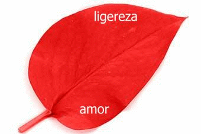

Kendimi biraktigim, hayatimim ve de senin en cesur günüydü.
Ýçimdeki hisleri dusundugumde bir yanda patlarcasýna zerrecikler halinde
ucuyordum, diðer tarafta ise endiþlerim artýk eyleme geçmiþti.
Hiç bitmemesini, seni o cihangir odasýndan hiç çýkarmamayý istedim.
Ama seni anlamamýþtým, ta ki takside elini tuttuðumda ona sýmsýký sarýlmana
kadar.
